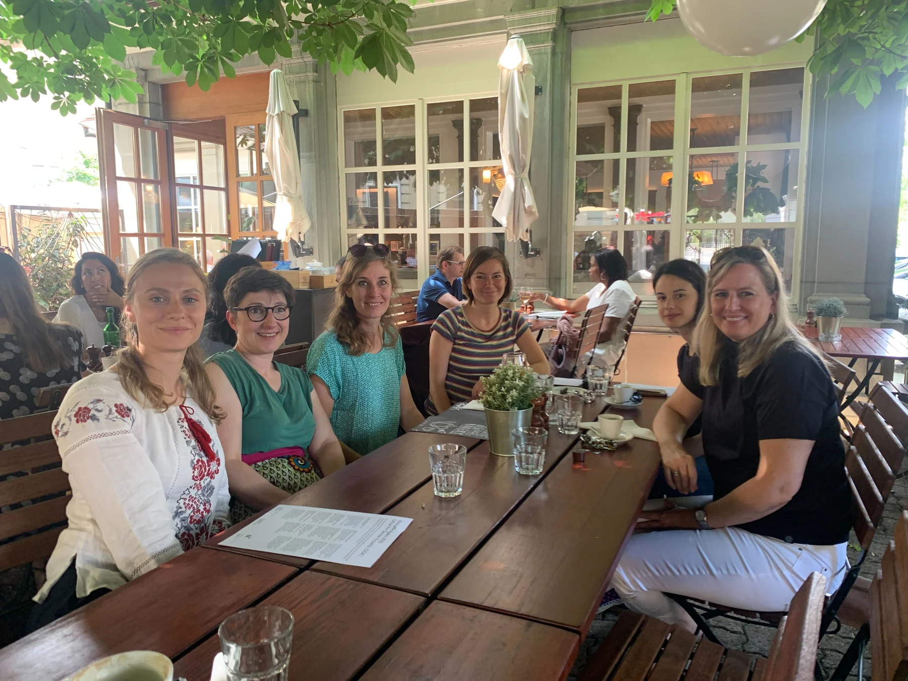

500 Women Scientists · Bern–Fribourg
Good science.
Stronger
together.
We connect, support and amplify women in science. A community rooted in Bern and Fribourg, open to every discipline and every career stage.

LOCAL CONNECTIONS. SHARED POSSIBILITIES.Different disciplines.
Shared ambition.
LOCAL ROOTS.
GLOBAL MOVEMENT.
Why we come together
More voices.
Better science.
Science benefits when different perspectives have a seat at the table. We’re an independent, grassroots community creating space for women to connect, share knowledge and shape a more inclusive scientific world.
Build connections.
Meet peers across disciplines, exchange experiences and find support for the next step in your career.
Make science visible.
Bring research beyond the lab through talks, outreach and stories that put women scientists in the spotlight.
Help change the culture.
Advocate for fairer working conditions and a scientific community where more people can thrive.


The people behind the pod
Many paths.
One community.
Researchers, science communicators and women working across STEM. Our members bring different experiences, and make this community their own.
Meet our membersBeyond the everyday
Good things happen
when we get together.
A look back at our gatherings, conversations and shared ideas.
Workshop: Power dynamics in the workplace and negotiation skills for resilience
Casa d'Italia, Bühlstrasse 57, 3012 Bern
New to the pod? Come say hello.
Our regular meetings are a relaxed way to meet the community. Email us to find out about the next gathering.
Ideas worth sharing
Voices from our community.

La tête dans les données, the podcast putting women scientists in the spotlight.
Laure von der Weid & Malika Tapparel
Read the story
The Yellow Project: Creating awareness around sexual harassment and discrimination in science
500 Women Scientists
Read the story
MINDS: a grassroots mental health conference for academics
500 Women Scientists
Read the storyThere’s a place for you here
Bring your curiosity.
Find your community.
Every discipline. Every career stage. Join a local network of women making science more open and inclusive.